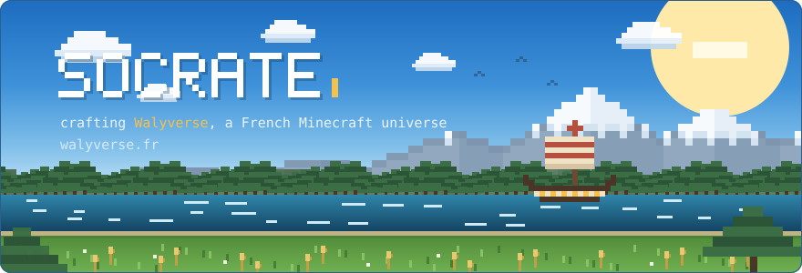

I'm building Walyverse, a French Minecraft universe, and I make nearly every piece of it myself:
- The gameplay: an ecosystem of 17+ custom Java plugins (economy, jobs, items, chat, teleportation, votes, cross-server sync, i18n, and more)
- The web: the network's site and store, running on a hand-made Azuriom theme (PHP, Sass, JS)
- The infrastructure: Ferry, my own deployment platform that ships files across the whole fleet of servers, safely
- The look: custom 3D cosmetics, models and resource packs
Everything on this profile, the banner above and the stats card below, is drawn by my own scripts. No generators, no templates.
